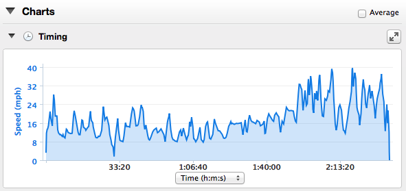
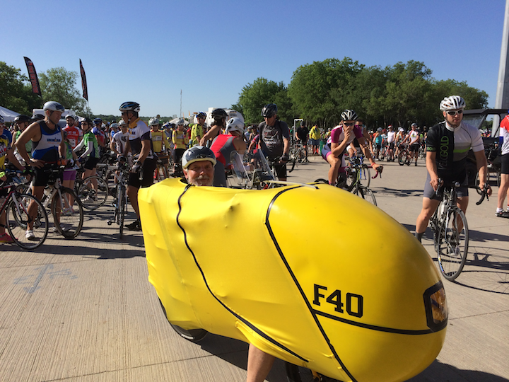
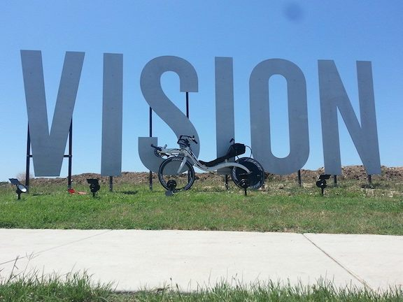
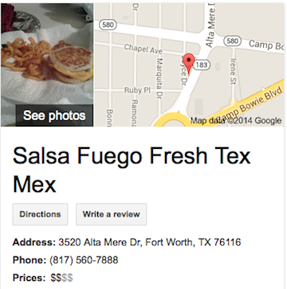

F-40 Chisholm Trail Parkway Ride Report
09 May 2014
What a beautiful day for a ride! Not a cloud in the sky.
Not sure exactly how many riders - I heard somewhere between 2,000 and 4,000. There were definitely a lot of them!
This was a once in a life time ride on the newly, still under construction, Chisholm Trail Parkway that runs from just outside Fort Worth south to Cleburne. No cars, just 22 miles of somewhat smooth out-and-back tollway concrete.

These guys in the green and white kits were very fast. They quickly left me in their dust. Greg said he finally caught them about 5 miles from the finish.
A lot of bents also. Greg and Alexis Gross on their M5 and Bacchetta CA2 respectively. I met a couple of other rbent.org members - Dan and Sharron. I don’t remember their last names but had a fun time talking with them afterwards. There were several trikes and two penny-farthings (they are not recumbents, but they are pretty strange none the less). Those penny-farthing guys when sitting on their bikes must be 10 to 12 feet in the air. They rode the 33 mile route. I don’t see how they managed to stay upright with the extreme wind gusting going on.
The winds were horrendous - 18 mph gusting to 28 mph directly out of the south making for a direct headwind for the first 22 miles straight out on the out-and-back course. Working really hard I managed to make 13.5 mph average on the way south out of town. This means the effective headwinds where 31.5 gusting to 41.5 mph on my moving bike heading south. I did hit a top speed of 28 mph on the way out once but the effective wind of gusting to 56 mph were just to much for me and several times I had to back off the speed some when the winds did angle some from the side.
Heading back north after the turn around was a blast. I averaged 24.0 mph for the north segment making my overall average for the ride 17.4 mph. Lots of times on the way back I had to ride the brakes - mainly because I was just too scared to go faster. Greg finished up a good 20 minutes faster than me and he said he averaged 28.2 mph on his M5 on the way back. Good grief he’s fast!
Here you can see the difference the wind make heading south vs heading back north. 1 hour and 39 minutes southbound vs 55 minutes northbound.

Got a good picture just a little bit before the start of the ride.

Greg got a great picture of his M5 after the race in front of a sign at the race. I’m pretty sure it is the flames on the front of his bike that makes it go so fast. I’ll have to get some flames for my F-40, then maybe I can keep up with him :)

I was shooting for a 2 hour 30 minute elapsed time, but I managed a 2 hour 36 minute elapsed time. I’m happy with that considering the wind factor.
Being the big Dallas / Fort Worth area there were lots of cyclists sync’d to Strava. Here is the strava flyby video: (press the start arrow and then wait a few seconds for the ride to start)
View strava flyby motion video
Post ride wind down. Spent a fair amount of time gabbing with Dan and Sharron after the ride. The Dallas / Fort Worth group is a fun bunch. I’ll have to make sure I hook up with them again when I do another ride in the area.
Once all the bikes were packed up and I put some normal clothes on Greg and Alexis and I went to a great local Mexican restaurant - Salsa Fuegro. Here’s my plug - it was pretty darn good. Note - if you go to the restaurant just after a local bike ride that has 4,000 riders all the other patrons will probably be bikers too.

By the Numbers
http://connect.garmin.com/modern/activity/497296511
http://app.strava.com/activities/139585942
Next weekend is the Real Ale Ride http://realaleride.com
Definitely on the TiAero for this one because of all the climbing!